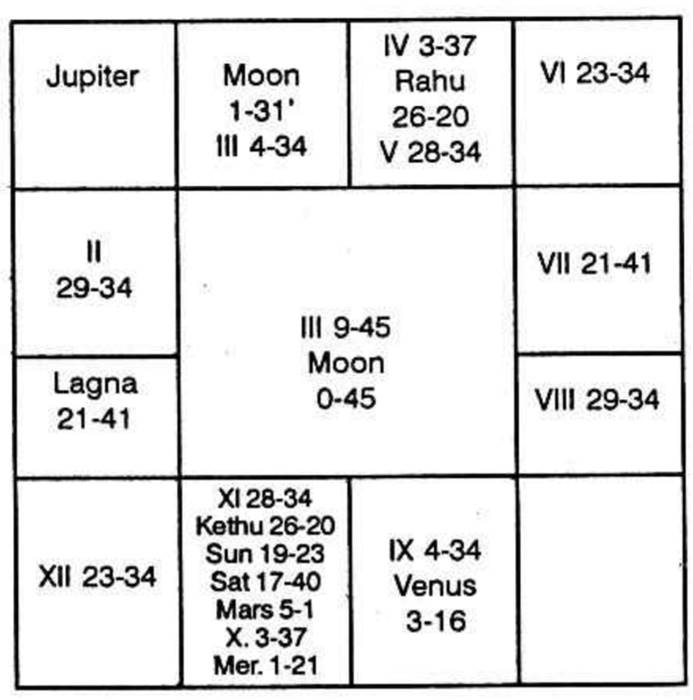

Mars, Venus, Moon and Jupiter are the planets which indicate that one will take up “Farming” if they are in any manner connected with houses 2, 6 and 10.
Mars denotes “Land”. He is called Bhoomikaraka: Venus and Mars shows the action to produce, Moon shows irrigation. Jupiter indicates progeny or production and produce.
Hence one takes up farming, if one enjoys the conjoined period of Venus, Mars, Moon and Jupiter.

Kethu Dasa 6 years, 2 months and 13 days.
Second house extends from 29°34′ Aquarius and 4°34′ Aries. Moon and Jupiter are in the second house. No planet is in Moon’s star. Mercury and Jupiter are in Jupiter’s star.
6th house is vacant. It is owned by Mercury. In its star Sani, Sun and Kethu are deposited.
10th house is occupied by Mars, Saturn, Sun and Kethu. Majority of the planets are connected with farming. Rahu represents Venus who is in Mars star. Rahu is also in Mars star. Mars is in Saturn star.
Ketu represents Mars and Moon is in Ketu star. Hence all planets are connected with farming.
Of these, which are favourable? Those planets which are deposited in such a sub which is ruled by Mars or Venus or Moon or Jupiter.
Sun, Moon and Venus are in Moon's sub. Jupiter is in Mar's sub. Rahu and Ketu are in Jupiter sub. Mars, which is in Saturn star and Saturn sub denotes that during Mars sub period, one will purchase plot, acquire and use it for one's business as Saturn is lord of 2, deposited in 10 in the constellation of lord of 6. Therefore, this gentleman has purchased the plot of land for farming on 6th July, 1968. At that time, he was running Moon Dasa, Venus Bhukti, Mars Anthra, and Saturn Sookshma. Mars and Saturn, as already said, are the two planets, which are connected with 2, 4 and 11, indicate purchase of property. Second house shows acquisition, 4th house indicates land and the 11th house shows possession and gains. Since Mars and Saturn are connected with 2, 4 and 11, he purchased in that conjoined period. The day was Saturday and Moon was transiting in Venus sign, Jupiter star, and Venus the Bhuktinatha was transiting in Jupiter star Punarvasu. Thus according to the method advocated by Krishnamurti Padhdhati, it is found that these agree. Thereby it is a confirmation that the horoscope erected according to the timing given by parents is correct.
As regards the future of any profession, one is to know whether the periods (according to Vimshottari Dasa) ruled by the planets have any connection whatsoever with that nature of profession, which has been started. If the following dasa lord has no connection, then that particular nature of profession will come to an end and according to the nature of the dasa lord, there will be a change in the profession. Now the Mars Dasa follows with that of Moon and Mars is in Saturn star, Saturn sub. Therefore, more and more acquisition of land, expansion of business, etc. are shown. Then follows Rahu Dasa, who is deposited in Mars star and Jupiter sub.
Students should note that any planet, which is deposited in Saturn sub, no doubt, gives advantageous results, if he is a benefic; but yet one will not be satisfied with the net profit; But if Jupiter happens to be the sub lord, there will be the providential help so that the yield from the field will be satisfactory and also the price will be such as to bring larger profits. Therefore, I predict that during the remaining period of Moon Dasa, in which the cultivation will be going on and the farm will come up without any difficulty for watering, etc., as the Sun Bhukti alone is left out, which is also in Venus sub. During Mars Dasa as Mars is in the sub of Saturn, the growth will not be as satisfactory as it was, in Moon Dasa, yet since it is lord of 10 and 11 and also in the constellation of the planet in the 10th bhava, there will be progress; Saturn in Scorpio sign (watery, fruitful sign) in Anuradha star (Anuradha indicates fertiliser, chemical, etc.) show that he will make use of chemical fertiliser to have greater yield from the field, but not to the extent to which one expects. The best sub periods in Mars Dasa would be Jupiter Bhukti, Mercury Bhukti and Bukties of the luminaries Sun and Moon. During Rahu Dasa, as it is in Mars constellation and in the sub of Jupiter there will be bumper crop and most satisfactory results promising increases in income, satisfactory bank position, expansion of business etc.